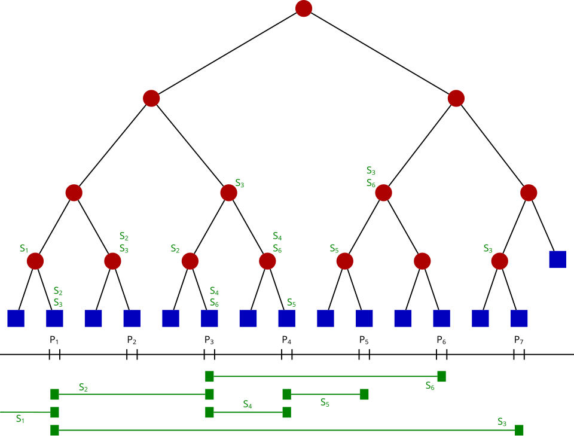

Customizable Dashboard with Real-Time Analytics
Business Case
Multi-channel customer interaction tracking systems log and manage customer communication from various sources such as chat, email, phone, and social media. These systems must not only store each interaction, but also track activity patterns over time for real-time decisions and service optimization.
Algorithm, Design Techniques, Performance Analysis:
A Segment Tree is a powerful data structure designed to efficiently perform range queries and updates on an array or sequence of data. Unlike simpler structures, it supports complex queries such as sums, minimums, maximums, and more over any sub-interval in O(log n) time, while also allowing point updates with the same time complexity. This makes it ideal for real-time analytics dashboards where interaction counts or other metrics need fast aggregation and updating across varying time windows or categories.
Challenges: Segment Trees are more complex to implement and maintain compared to simpler data structures like Fenwick Trees or Hash Maps.
Market Benefits: Enables instant aggregation of customer interaction metrics over arbitrary time ranges, helping businesses respond quickly to changes in customer behavior Businesses can dynamically monitor key performance indicators and adapt resource allocation, marketing efforts, or customer support based on live data.
Algorithm, Design Techniques, Performance Analysis:
Code
#include#include using namespace std; class SegmentTree { private: vector tree; int n; void build(const vector &arr, int node, int start, int end) { if (start == end) { tree[node] = arr[start]; } else { int mid = (start + end) / 2; build(arr, 2*node, start, mid); build(arr, 2*node+1, mid+1, end); tree[node] = tree[2*node] + tree[2*node+1]; // sum query } } void update(int node, int start, int end, int idx, int val) { if (start == end) { tree[node] += val; // increment by val } else { int mid = (start + end) / 2; if (idx <= mid) update(2*node, start, mid, idx, val); else update(2*node+1, mid+1, end, idx, val); tree[node] = tree[2*node] + tree[2*node+1]; } } int query(int node, int start, int end, int l, int r) { if (r < start || l > end) return 0; // outside query range if (l <= start && end <= r) return tree[node]; // fully inside query range int mid = (start + end) / 2; int p1 = query(2*node, start, mid, l, r); int p2 = query(2*node+1, mid+1, end, l, r); return p1 + p2; } public: SegmentTree(const vector &arr) { n = arr.size(); tree.resize(4*n, 0); build(arr, 1, 0, n-1); } void update(int idx, int val) { update(1, 0, n-1, idx, val); } int rangeQuery(int l, int r) { return query(1, 0, n-1, l, r); } }; int main() { // Initial interaction counts per minute (60 minutes) vector interactions(60, 0); SegmentTree segTree(interactions); // Simulate updates: minute 5 +1 interaction, minute 10 +2, minute 20 +3 segTree.update(5, 1); segTree.update(10, 2); segTree.update(20, 3); cout << "Interactions from minute 0 to 20: " << segTree.rangeQuery(0, 20) << endl; // Output: 6 cout << "Interactions from minute 6 to 15: " << segTree.rangeQuery(6, 15) << endl; // Output: 2 return 0; }
⏱️ Time And Space Complexity
| Operation | Time Complexity | Space Complexity |
|---|---|---|
| Build tree | O(n) | O(4n) |
| Point update | O(log n) | O(1) (in-place) |
| Range query | O(log n) | O(1) |
| Overall space | N/A | O(4n) due to tree |
Inference
Segment Trees handle range queries and updates efficiently, supporting real-time analytics like aggregated sales, support tickets, or KPIs over dashboard ranges.
📚 References
- https://en.wikipedia.org/wiki/Segment_tree
- https://cp-algorithms.com/data_structures/segment_tree.html